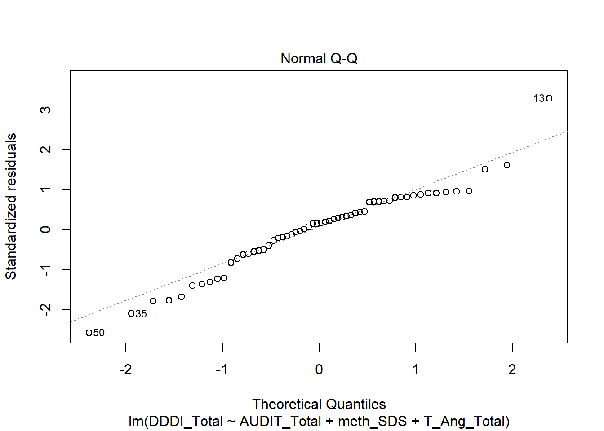
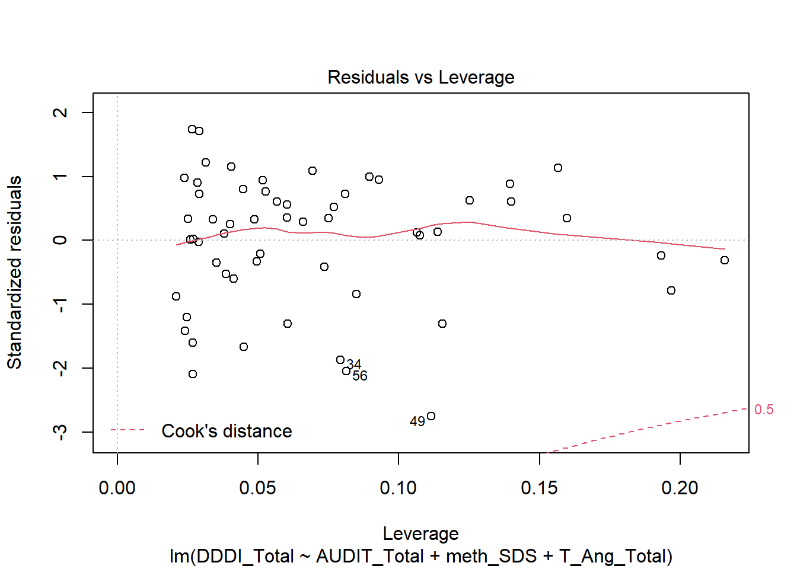

5 Additional Analyses
5.1 Reduced Model
5.1.1 Model Building
m0 <- lm(DDDI_Total~1, data = ma) # Total SS
m1 <- lm(DDDI_Total ~ age + sex, data = ma)
m2.rm <- lm(DDDI_Total ~ age + AUDIT_Total + meth_SDS, data = ma)
m3.rm <- lm(DDDI_Total ~ AUDIT_Total + meth_SDS + T_Ang_Total, data = ma)
save(m3.rm, file = "objects/m3.rm.rda")5.1.2 Sums of Suares
Total SS
| Df | Sum Sq | Mean Sq | F value | Pr(>F) | |
|---|---|---|---|---|---|
| Residuals | 57 | 12531.4 | 219.8491 | NA | NA |
Model SS
| Res.Df | RSS | Df | Sum of Sq | F | Pr(>F) |
|---|---|---|---|---|---|
| 55 | 11126.850 | NA | NA | NA | NA |
| 54 | 8050.865 | 1 | 3075.985 | 20.63172 | 0.0000316 |
| 54 | 6436.382 | 0 | 1614.483 | NA | NA |
5.1.3 Model Summaries
Model 1
##
## Call:
## lm(formula = DDDI_Total ~ age + sex, data = ma)
##
## Residuals:
## Min 1Q Median 3Q Max
## -23.217 -9.725 -2.183 9.174 64.106
##
## Coefficients:
## Estimate Std. Error t value Pr(>|t|)
## (Intercept) 90.7628 9.3625 9.694 0.000000000000168 ***
## age -0.7818 0.3156 -2.477 0.0163 *
## sexMale -1.4139 4.0210 -0.352 0.7265
## ---
## Signif. codes: 0 '***' 0.001 '**' 0.01 '*' 0.05 '.' 0.1 ' ' 1
##
## Residual standard error: 14.22 on 55 degrees of freedom
## Multiple R-squared: 0.1121, Adjusted R-squared: 0.07979
## F-statistic: 3.471 on 2 and 55 DF, p-value: 0.03804Model 2
##
## Call:
## lm(formula = DDDI_Total ~ age + AUDIT_Total + meth_SDS, data = ma)
##
## Residuals:
## Min 1Q Median 3Q Max
## -32.250 -6.900 0.186 5.988 49.729
##
## Coefficients:
## Estimate Std. Error t value Pr(>|t|)
## (Intercept) 52.0408 12.0372 4.323 0.0000666 ***
## age -0.3201 0.2891 -1.107 0.27312
## AUDIT_Total 1.7096 0.6063 2.820 0.00671 **
## meth_SDS 2.0406 0.7180 2.842 0.00631 **
## ---
## Signif. codes: 0 '***' 0.001 '**' 0.01 '*' 0.05 '.' 0.1 ' ' 1
##
## Residual standard error: 12.21 on 54 degrees of freedom
## Multiple R-squared: 0.3575, Adjusted R-squared: 0.3219
## F-statistic: 10.02 on 3 and 54 DF, p-value: 0.00002376Model 3
## Model Summary
## ---------------------------------------------------------------
## R 0.697 RMSE 10.918
## R-Squared 0.486 Coef. Var 16.383
## Adj. R-Squared 0.458 MSE 119.192
## Pred R-Squared 0.371 MAE 8.138
## ---------------------------------------------------------------
## RMSE: Root Mean Square Error
## MSE: Mean Square Error
## MAE: Mean Absolute Error
##
## ANOVA
## ---------------------------------------------------------------------
## Sum of
## Squares DF Mean Square F Sig.
## ---------------------------------------------------------------------
## Regression 6095.014 3 2031.671 17.045 0.0000
## Residual 6436.382 54 119.192
## Total 12531.397 57
## ---------------------------------------------------------------------
##
## Parameter Estimates
## ---------------------------------------------------------------------------------------
## model Beta Std. Error Std. Beta t Sig lower upper
## ---------------------------------------------------------------------------------------
## (Intercept) 26.667 5.888 4.529 0.000 14.863 38.471
## AUDIT_Total 1.213 0.559 0.229 2.172 0.034 0.094 2.333
## meth_SDS 2.045 0.604 0.347 3.383 0.001 0.833 3.257
## T_Ang_Total 0.956 0.246 0.400 3.883 0.000 0.463 1.450
## ---------------------------------------------------------------------------------------5.1.4 Assumptions
Plot of Residuals

Colinearity
## # A tibble: 3 x 2
## Variable VIF
## <chr> <dbl>
## 1 AUDIT-C 1.17
## 2 SDS 1.10
## 3 STAXI-T 1.11Homogeneity

Linearity

Normality of Residuals

Outliers
Residuals

Cooks D
Mahalanobis Distance
Residual Leverage Plot
## Warning: Removed 50 rows containing missing values (geom_text).5.2 Removed Outlier (Forced Entry)
Omitting response 146
5.2.1 Model Building
ma.nout <- ma %>% mutate(include = ifelse(id == 146, FALSE, TRUE)) # Not including id 146
m0.2 <- lm(DDDI_Total~1, data = ma.nout[ma.nout$include == TRUE, ]) # Total SS
m1.2 <- lm(DDDI_Total~age + sex, data = ma.nout[ma.nout$include == TRUE, ]) # Model 1 (demographics)
m2.2 <- lm(DDDI_Total~age + sex + AUDIT_Total + meth_SDS, data = ma.nout[ma.nout$include == TRUE, ]) # Alcohol and MA use characteristics
m3.2 <- lm(DDDI_Total~age + sex + AUDIT_Total + meth_SDS + T_Ang_Total, data = ma.nout[ma.nout$include == TRUE, ]) # STAXI5.2.2 Sums of Squares
Total SS
| Df | Sum Sq | Mean Sq | F value | Pr(>F) | |
|---|---|---|---|---|---|
| Residuals | 56 | 8446.211 | 150.8252 | NA | NA |
Model SS
| Res.Df | RSS | Df | Sum of Sq | F | Pr(>F) |
|---|---|---|---|---|---|
| 54 | 6905.453 | NA | NA | NA | NA |
| 52 | 5276.860 | 2 | 1628.5930 | 8.717052 | 0.0005541 |
| 51 | 4764.125 | 1 | 512.7356 | 5.488839 | 0.0230774 |
The model with Alcohol and SDS accounts for an additional 3088.06 Sum of Squares over and above the model including age and gender and this change was statistically significant (p < .01). The \(R^2\) increased by 24.6% in model 2.
The model with Trait Anger accounts for an additional 1823.60 Sum of Squares controlling for demographics and alcohol/substance use and this too was statistically significant (p < .01). The \(R^2\) increased by 14.6%.
5.2.3 Model Summaries
Model 1
##
## Call:
## lm(formula = DDDI_Total ~ age + sex, data = ma.nout[ma.nout$include ==
## TRUE, ])
##
## Residuals:
## Min 1Q Median 3Q Max
## -23.160 -8.576 -1.528 10.840 16.748
##
## Coefficients:
## Estimate Std. Error t value Pr(>|t|)
## (Intercept) 90.2153 7.4443 12.119 < 0.0000000000000002 ***
## age -0.7622 0.2510 -3.037 0.00367 **
## sexMale -3.1999 3.2119 -0.996 0.32357
## ---
## Signif. codes: 0 '***' 0.001 '**' 0.01 '*' 0.05 '.' 0.1 ' ' 1
##
## Residual standard error: 11.31 on 54 degrees of freedom
## Multiple R-squared: 0.1824, Adjusted R-squared: 0.1521
## F-statistic: 6.024 on 2 and 54 DF, p-value: 0.004348Model 2
##
## Call:
## lm(formula = DDDI_Total ~ age + sex + AUDIT_Total + meth_SDS,
## data = ma.nout[ma.nout$include == TRUE, ])
##
## Residuals:
## Min 1Q Median 3Q Max
## -27.264 -5.672 1.504 6.816 17.708
##
## Coefficients:
## Estimate Std. Error t value Pr(>|t|)
## (Intercept) 62.0425 10.1526 6.111 0.000000129 ***
## age -0.4150 0.2427 -1.710 0.09327 .
## sexMale -2.6697 2.8949 -0.922 0.36068
## AUDIT_Total 1.3691 0.5070 2.700 0.00933 **
## meth_SDS 1.4207 0.6079 2.337 0.02332 *
## ---
## Signif. codes: 0 '***' 0.001 '**' 0.01 '*' 0.05 '.' 0.1 ' ' 1
##
## Residual standard error: 10.07 on 52 degrees of freedom
## Multiple R-squared: 0.3752, Adjusted R-squared: 0.3272
## F-statistic: 7.808 on 4 and 52 DF, p-value: 0.00005251Model 3
## Model Summary
## --------------------------------------------------------------
## R 0.660 RMSE 9.665
## R-Squared 0.436 Coef. Var 14.750
## Adj. R-Squared 0.381 MSE 93.414
## Pred R-Squared 0.299 MAE 7.475
## --------------------------------------------------------------
## RMSE: Root Mean Square Error
## MSE: Mean Square Error
## MAE: Mean Absolute Error
##
## ANOVA
## -------------------------------------------------------------------
## Sum of
## Squares DF Mean Square F Sig.
## -------------------------------------------------------------------
## Regression 3682.086 5 736.417 7.883 0.0000
## Residual 4764.125 51 93.414
## Total 8446.211 56
## -------------------------------------------------------------------
##
## Parameter Estimates
## ----------------------------------------------------------------------------------------
## model Beta Std. Error Std. Beta t Sig lower upper
## ----------------------------------------------------------------------------------------
## (Intercept) 48.719 11.279 4.319 0.000 26.074 71.363
## age -0.269 0.241 -0.135 -1.117 0.269 -0.753 0.215
## sexMale -4.033 2.838 -0.158 -1.421 0.161 -9.730 1.664
## AUDIT_Total 1.143 0.496 0.258 2.305 0.025 0.147 2.139
## meth_SDS 1.413 0.583 0.287 2.423 0.019 0.242 2.584
## T_Ang_Total 0.587 0.251 0.267 2.343 0.023 0.084 1.090
## ----------------------------------------------------------------------------------------5.2.4 Assumptions
Plot of Residuals
Colinearity (model 3)
tibble(Variable = c("Age", "Sex", "AUDIT-C", "SDS", "STAXI-T"),
VIF = vif(m3.2))## # A tibble: 5 x 2
## Variable VIF
## <chr> <dbl>
## 1 Age 1.32
## 2 Sex 1.12
## 3 AUDIT-C 1.14
## 4 SDS 1.26
## 5 STAXI-T 1.18Homogeneity

Linearity

Normality of Residuals

Outliers
Residuals
Cooks D
Mahalanobis Distance
| index | mahal | p |
|---|---|---|
| 1 | 10.05969 | 0.0394342 |
| 39 | 13.13551 | 0.0106323 |
| 41 | 10.12265 | 0.0384116 |
| 45 | 10.30826 | 0.0355432 |
Residual Leverage Plot
## Warning: Removed 55 rows containing missing values (geom_text).5.3 Removed Outlier (Reduced Model)
5.3.1 Model Building
ma.nout <- ma %>% filter(id != 146) # Not including id 146
m0.3 <- lm(DDDI_Total~1, data = ma.nout) # Total SS
m1.3 <- lm(DDDI_Total~age + sex, data = ma.nout) # Model 1 (demographics)
m2.3 <- lm(DDDI_Total~age + AUDIT_Total + meth_SDS, data = ma.nout) # Alcohol and MA use characteristics
m3.3 <- lm(DDDI_Total~AUDIT_Total + meth_SDS + T_Ang_Total, data = ma.nout) # STAXI5.3.2 Sums of Squares
Total SS
| Df | Sum Sq | Mean Sq | F value | Pr(>F) | |
|---|---|---|---|---|---|
| Residuals | 56 | 8446.211 | 150.8252 | NA | NA |
Model SS
| Res.Df | RSS | Df | Sum of Sq | F | Pr(>F) |
|---|---|---|---|---|---|
| 54 | 6905.453 | NA | NA | NA | NA |
| 53 | 5363.163 | 1 | 1542.2901 | 15.24126 | 0.0002693 |
| 53 | 5143.269 | 0 | 219.8935 | NA | NA |
5.3.3 Model Summaries
Model 1
##
## Call:
## lm(formula = DDDI_Total ~ age + sex, data = ma.nout)
##
## Residuals:
## Min 1Q Median 3Q Max
## -23.160 -8.576 -1.528 10.840 16.748
##
## Coefficients:
## Estimate Std. Error t value Pr(>|t|)
## (Intercept) 90.2153 7.4443 12.119 < 0.0000000000000002 ***
## age -0.7622 0.2510 -3.037 0.00367 **
## sexMale -3.1999 3.2119 -0.996 0.32357
## ---
## Signif. codes: 0 '***' 0.001 '**' 0.01 '*' 0.05 '.' 0.1 ' ' 1
##
## Residual standard error: 11.31 on 54 degrees of freedom
## Multiple R-squared: 0.1824, Adjusted R-squared: 0.1521
## F-statistic: 6.024 on 2 and 54 DF, p-value: 0.004348Model 2
##
## Call:
## lm(formula = DDDI_Total ~ age + AUDIT_Total + meth_SDS, data = ma.nout)
##
## Residuals:
## Min 1Q Median 3Q Max
## -28.366 -6.083 1.218 6.969 16.852
##
## Coefficients:
## Estimate Std. Error t value Pr(>|t|)
## (Intercept) 60.9234 10.0655 6.053 0.000000149 ***
## age -0.4496 0.2395 -1.877 0.0660 .
## AUDIT_Total 1.3335 0.5048 2.641 0.0108 *
## meth_SDS 1.5016 0.6007 2.500 0.0156 *
## ---
## Signif. codes: 0 '***' 0.001 '**' 0.01 '*' 0.05 '.' 0.1 ' ' 1
##
## Residual standard error: 10.06 on 53 degrees of freedom
## Multiple R-squared: 0.365, Adjusted R-squared: 0.3291
## F-statistic: 10.16 on 3 and 53 DF, p-value: 0.00002176Model 3
## Model Summary
## --------------------------------------------------------------
## R 0.625 RMSE 9.851
## R-Squared 0.391 Coef. Var 15.034
## Adj. R-Squared 0.357 MSE 97.043
## Pred R-Squared 0.302 MAE 7.595
## --------------------------------------------------------------
## RMSE: Root Mean Square Error
## MSE: Mean Square Error
## MAE: Mean Absolute Error
##
## ANOVA
## --------------------------------------------------------------------
## Sum of
## Squares DF Mean Square F Sig.
## --------------------------------------------------------------------
## Regression 3302.941 3 1100.980 11.345 0.0000
## Residual 5143.269 53 97.043
## Total 8446.211 56
## --------------------------------------------------------------------
##
## Parameter Estimates
## ---------------------------------------------------------------------------------------
## model Beta Std. Error Std. Beta t Sig lower upper
## ---------------------------------------------------------------------------------------
## (Intercept) 34.818 5.763 6.042 0.000 23.260 46.377
## AUDIT_Total 1.164 0.504 0.263 2.309 0.025 0.153 2.175
## meth_SDS 1.829 0.549 0.371 3.335 0.002 0.729 2.930
## T_Ang_Total 0.593 0.243 0.270 2.438 0.018 0.105 1.082
## ---------------------------------------------------------------------------------------5.3.4 Assumptions
Plot of Residuals

Colinearity
## # A tibble: 3 x 2
## Variable VIF
## <chr> <dbl>
## 1 AUDIT-C 1.13
## 2 SDS 1.08
## 3 STAXI-T 1.07Homogeneity
Linearity

Normality of Residuals
##
## Shapiro-Wilk normality test
##
## data: m3.3$residuals
## W = 0.95023, p-value = 0.02014Outliers
Residuals
Cooks D
5.4 Robust Regression
Information on robust regression taken from here. and here
5.4.1 Full model (Bisquare Weights)
##
## Call:
## robustbase::lmrob(formula = DDDI_Total ~ age + sex + AUDIT_Total + meth_SDS +
## T_Ang_Total, data = ma, psi = "bisquare")
## \--> method = "MM"
## Residuals:
## Min 1Q Median 3Q Max
## -27.036 -5.354 1.183 6.125 42.769
##
## Coefficients:
## Estimate Std. Error t value Pr(>|t|)
## (Intercept) 47.0037 11.8143 3.979 0.000216 ***
## age -0.2552 0.2663 -0.959 0.342195
## sexMale -3.2685 3.1833 -1.027 0.309282
## AUDIT_Total 1.4027 0.5169 2.714 0.009008 **
## meth_SDS 1.5671 0.6627 2.365 0.021819 *
## T_Ang_Total 0.5323 0.2147 2.479 0.016440 *
## ---
## Signif. codes: 0 '***' 0.001 '**' 0.01 '*' 0.05 '.' 0.1 ' ' 1
##
## Robust residual standard error: 8.34
## Multiple R-squared: 0.4728, Adjusted R-squared: 0.4221
## Convergence in 16 IRWLS iterations
##
## Robustness weights:
## observation 13 is an outlier with |weight| = 0 ( < 0.0017);
## 3 weights are ~= 1. The remaining 54 ones are summarized as
## Min. 1st Qu. Median Mean 3rd Qu. Max.
## 0.2717 0.8432 0.9517 0.8927 0.9839 0.9989
## Algorithmic parameters:
## tuning.chi bb tuning.psi refine.tol
## 1.54764000000000 0.50000000000000 4.68506100000000 0.00000010000000
## rel.tol scale.tol solve.tol eps.outlier
## 0.00000010000000 0.00000000010000 0.00000010000000 0.00172413793103
## eps.x warn.limit.reject warn.limit.meanrw
## 0.00000000008731 0.50000000000000 0.50000000000000
## nResample max.it best.r.s k.fast.s k.max
## 500 50 2 1 200
## maxit.scale trace.lev mts compute.rd fast.s.large.n
## 200 0 1000 0 2000
## psi subsampling cov
## "bisquare" "nonsingular" ".vcov.avar1"
## compute.outlier.stats
## "SM"
## seed : int(0)5.4.1.1 Standardised
##
## Call:
## robustbase::lmrob(formula = DDDI_Std ~ age_Std + sex_Std + AUDIT_Std + SDS_Std +
## STAXI_Std, data = ma.std)
## \--> method = "MM"
## Residuals:
## Min 1Q Median 3Q Max
## -1.82340 -0.36109 0.07976 0.41309 2.88445
##
## Coefficients:
## Estimate Std. Error t value Pr(>|t|)
## (Intercept) -0.007823 0.113049 -0.069 0.94510
## age_Std -0.105146 0.109687 -0.959 0.34220
## sex_Std -0.105692 0.102936 -1.027 0.30928
## AUDIT_Std 0.264660 0.097534 2.714 0.00901 **
## SDS_Std 0.265688 0.112363 2.365 0.02182 *
## STAXI_Std 0.222490 0.089736 2.479 0.01644 *
## ---
## Signif. codes: 0 '***' 0.001 '**' 0.01 '*' 0.05 '.' 0.1 ' ' 1
##
## Robust residual standard error: 0.5625
## Multiple R-squared: 0.4728, Adjusted R-squared: 0.4221
## Convergence in 16 IRWLS iterations
##
## Robustness weights:
## observation 13 is an outlier with |weight| = 0 ( < 0.0017);
## 3 weights are ~= 1. The remaining 54 ones are summarized as
## Min. 1st Qu. Median Mean 3rd Qu. Max.
## 0.2717 0.8432 0.9517 0.8927 0.9839 0.9989
## Algorithmic parameters:
## tuning.chi bb tuning.psi refine.tol
## 1.547640000000000 0.500000000000000 4.685061000000000 0.000000100000000
## rel.tol scale.tol solve.tol eps.outlier
## 0.000000100000000 0.000000000100000 0.000000100000000 0.001724137931034
## eps.x warn.limit.reject warn.limit.meanrw
## 0.000000000006082 0.500000000000000 0.500000000000000
## nResample max.it best.r.s k.fast.s k.max
## 500 50 2 1 200
## maxit.scale trace.lev mts compute.rd fast.s.large.n
## 200 0 1000 0 2000
## psi subsampling cov
## "bisquare" "nonsingular" ".vcov.avar1"
## compute.outlier.stats
## "SM"
## seed : int(0)## (Intercept) age_Std sex_Std AUDIT_Std SDS_Std STAXI_Std
## -0.007822708 -0.105145801 -0.105691639 0.264660027 0.265688162 0.2224899555.4.2 Reduced Model
##
## Call:
## robustbase::lmrob(formula = DDDI_Total ~ AUDIT_Total + meth_SDS + T_Ang_Total,
## data = ma)
## \--> method = "MM"
## Residuals:
## Min 1Q Median 3Q Max
## -28.398 -5.868 1.317 6.500 39.373
##
## Coefficients:
## Estimate Std. Error t value Pr(>|t|)
## (Intercept) 34.2538 4.9369 6.938 0.00000000519 ***
## AUDIT_Total 1.3549 0.5122 2.645 0.01067 *
## meth_SDS 2.0514 0.4761 4.309 0.00006992705 ***
## T_Ang_Total 0.5404 0.1996 2.707 0.00907 **
## ---
## Signif. codes: 0 '***' 0.001 '**' 0.01 '*' 0.05 '.' 0.1 ' ' 1
##
## Robust residual standard error: 8.113
## Multiple R-squared: 0.4596, Adjusted R-squared: 0.4296
## Convergence in 12 IRWLS iterations
##
## Robustness weights:
## observation 13 is an outlier with |weight| = 0 ( < 0.0017);
## 3 weights are ~= 1. The remaining 54 ones are summarized as
## Min. 1st Qu. Median Mean 3rd Qu. Max.
## 0.1952 0.8638 0.9412 0.8803 0.9853 0.9990
## Algorithmic parameters:
## tuning.chi bb tuning.psi refine.tol
## 1.54764000000000 0.50000000000000 4.68506100000000 0.00000010000000
## rel.tol scale.tol solve.tol eps.outlier
## 0.00000010000000 0.00000000010000 0.00000010000000 0.00172413793103
## eps.x warn.limit.reject warn.limit.meanrw
## 0.00000000007276 0.50000000000000 0.50000000000000
## nResample max.it best.r.s k.fast.s k.max
## 500 50 2 1 200
## maxit.scale trace.lev mts compute.rd fast.s.large.n
## 200 0 1000 0 2000
## psi subsampling cov
## "bisquare" "nonsingular" ".vcov.avar1"
## compute.outlier.stats
## "SM"
## seed : int(0)Standardised
##
## Call:
## robustbase::lmrob(formula = DDDI_Std ~ AUDIT_Std + SDS_Std + STAXI_Std, data = ma.std)
## \--> method = "MM"
## Residuals:
## Min 1Q Median 3Q Max
## -1.91523 -0.39577 0.08882 0.43840 2.65541
##
## Coefficients:
## Estimate Std. Error t value Pr(>|t|)
## (Intercept) 0.02386 0.11389 0.209 0.83485
## AUDIT_Std 0.25563 0.09664 2.645 0.01067 *
## SDS_Std 0.34780 0.08072 4.309 0.0000699 ***
## STAXI_Std 0.22587 0.08344 2.707 0.00907 **
## ---
## Signif. codes: 0 '***' 0.001 '**' 0.01 '*' 0.05 '.' 0.1 ' ' 1
##
## Robust residual standard error: 0.5472
## Multiple R-squared: 0.4596, Adjusted R-squared: 0.4296
## Convergence in 14 IRWLS iterations
##
## Robustness weights:
## observation 13 is an outlier with |weight| = 0 ( < 0.0017);
## 3 weights are ~= 1. The remaining 54 ones are summarized as
## Min. 1st Qu. Median Mean 3rd Qu. Max.
## 0.1952 0.8638 0.9412 0.8803 0.9853 0.9990
## Algorithmic parameters:
## tuning.chi bb tuning.psi refine.tol
## 1.547640000000000 0.500000000000000 4.685061000000000 0.000000100000000
## rel.tol scale.tol solve.tol eps.outlier
## 0.000000100000000 0.000000000100000 0.000000100000000 0.001724137931034
## eps.x warn.limit.reject warn.limit.meanrw
## 0.000000000006082 0.500000000000000 0.500000000000000
## nResample max.it best.r.s k.fast.s k.max
## 500 50 2 1 200
## maxit.scale trace.lev mts compute.rd fast.s.large.n
## 200 0 1000 0 2000
## psi subsampling cov
## "bisquare" "nonsingular" ".vcov.avar1"
## compute.outlier.stats
## "SM"
## seed : int(0)## (Intercept) AUDIT_Std SDS_Std STAXI_Std
## 0.02385935 0.25562877 0.34780207 0.225874225.5 Effect Sizes
5.5.1 Full Model
Calculations for Cohens \(f^2\) were taken from here .| Variable | Simple | Partial | Part | f2 |
|---|---|---|---|---|
| DDDI Total | 1.0000000 | 1.0000000 | 1.0000000 | Inf |
| Age | -0.3317922 | -0.0486521 | -0.0430304 | 0.0018551 |
| Sex | -0.1141138 | -0.1660733 | -0.1562677 | 0.0250308 |
| AUDIT-C | 0.4477820 | 0.2882626 | 0.2661794 | 0.0762542 |
| SDS | 0.4895181 | 0.3579251 | 0.3169757 | 0.1116961 |
| STAXI-T | 0.5356423 | 0.4762875 | 0.4330222 | 0.2307817 |
5.5.2 Reduced Model
Model 1
## # A tibble: 3 x 5
## Variable Simple Partial Part f2
## <chr> <dbl> <dbl> <dbl> <dbl>
## 1 DDDI Total 1 1 1 Inf
## 2 Age -0.332 -0.317 -0.310 0.106
## 3 Sex -0.114 -0.0474 -0.0463 0.00215Model 2
## # A tibble: 4 x 5
## Variable Simple Partial Part f2
## <chr> <dbl> <dbl> <dbl> <dbl>
## 1 DDDI Total 1 1 1 Inf
## 2 Age -0.332 -0.149 -0.136 0.0190
## 3 AUDIT-C 0.448 0.358 0.342 0.132
## 4 SDS 0.490 0.361 0.323 0.117Final Model
| Variable | Simple | Partial | Part | f2 |
|---|---|---|---|---|
| DDDI Total | 1.0000000 | 1.0000000 | 1.0000000 | Inf |
| AUDIT-C | 0.4477820 | 0.2834842 | 0.2623396 | 0.0739086 |
| SDS | 0.4895181 | 0.4182089 | 0.3980016 | 0.1882203 |
| STAXI-T | 0.5356423 | 0.4672059 | 0.4425658 | 0.2435715 |
5.5.3 Full Model (Outlier Removed)
| Variable | Simple | Partial | Part | f2 |
|---|---|---|---|---|
| DDDI Total | 1.0000000 | 1.0000000 | 1.0000000 | Inf |
| Age | -0.4091367 | -0.1544695 | -0.1544695 | 0.0244441 |
| Sex | -0.2067828 | -0.1951631 | -0.1951631 | 0.0395968 |
| AUDIT-C | 0.4270087 | 0.3071498 | 0.3071498 | 0.1041683 |
| SDS | 0.4729296 | 0.3212640 | 0.3212640 | 0.1150890 |
| STAXI-T | 0.3819802 | 0.3117159 | 0.3117159 | 0.1076243 |
5.5.4 Reduced Model (Outlier Removed)
| Variable | Simple | Partial | Part | f2 |
|---|---|---|---|---|
| DDDI Total | 1.0000000 | 1.0000000 | 1.0000000 | Inf |
| AUDIT-C | 0.4270087 | 0.3023165 | 0.3023165 | 0.1005886 |
| SDS | 0.4729296 | 0.4164487 | 0.4164487 | 0.2098182 |
| STAXI-T | 0.3819802 | 0.3174979 | 0.3174979 | 0.1121058 |
5.6 Comparing Model Fit (AIC)
| Model | AIC |
|---|---|
| Full | 449.7068 |
| Reduced | 447.7350 |
| Full (Outlier Removed) | 428.0306 |
| Reduced (Outlier Removed) | 428.3954 |
| Robust (Full) | 453.7211 |
| Robust (Reduced) | 450.8887 |
5.7 Best Subset of models
## Best Subsets Regression
## -------------------------------------------------------
## Model Index Predictors
## -------------------------------------------------------
## 1 T_Ang_Total
## 2 meth_SDS T_Ang_Total
## 3 AUDIT_Total meth_SDS T_Ang_Total
## 4 sex AUDIT_Total meth_SDS T_Ang_Total
## 5 age sex AUDIT_Total meth_SDS T_Ang_Total
## -------------------------------------------------------
##
## Subsets Regression Summary
## -------------------------------------------------------------------------------------------------------------------------------------
## Adj. Pred
## Model R-Square R-Square R-Square C(p) AIC SBIC SBC MSEP FPE HSP APC
## -------------------------------------------------------------------------------------------------------------------------------------
## 1 0.2869 0.2742 0.1821 20.7638 462.7660 297.1716 468.9473 9255.3220 165.0735 2.9013 0.7640
## 2 0.4415 0.4212 0.3461 6.5564 450.5941 285.9400 458.8359 7383.1858 133.8334 2.3565 0.6194
## 3 0.4864 0.4578 0.3708 3.8506 447.7350 283.7427 458.0373 6917.9592 127.4124 2.2489 0.5897
## 4 0.5029 0.4653 0.3705 4.1234 447.8442 284.3494 460.2069 6824.8377 127.6792 2.2605 0.5909
## 5 0.5040 0.4563 0.3378 6.0000 449.7068 286.4679 464.1299 6942.1867 131.8873 2.3436 0.6104
## -------------------------------------------------------------------------------------------------------------------------------------
## AIC: Akaike Information Criteria
## SBIC: Sawa's Bayesian Information Criteria
## SBC: Schwarz Bayesian Criteria
## MSEP: Estimated error of prediction, assuming multivariate normality
## FPE: Final Prediction Error
## HSP: Hocking's Sp
## APC: Amemiya Prediction Criteria5.8 Moderation TBC
## Analysis of Variance Table
##
## Model 1: DDDI_Total ~ AUDIT.cen + SDS.cen
## Model 2: DDDI_Total ~ AUDIT.cen * meth_SDS
## Res.Df RSS Df Sum of Sq F Pr(>F)
## 1 55 8233.6
## 2 54 8221.6 1 12.025 0.079 0.7798## Analysis of Variance Table
##
## Model 1: DDDI_Total ~ AUDIT.cen + SDS.cen + STAXI.cen
## Model 2: DDDI_Total ~ AUDIT.cen + SDS.cen * STAXI.cen
## Res.Df RSS Df Sum of Sq F Pr(>F)
## 1 54 6436.4
## 2 53 6177.5 1 258.93 2.2215 0.142## Analysis of Variance Table
##
## Model 1: DDDI_Total ~ AUDIT.cen + SDS.cen + STAXI.cen
## Model 2: DDDI_Total ~ SDS.cen + AUDIT.cen * STAXI.cen
## Res.Df RSS Df Sum of Sq F Pr(>F)
## 1 54 6436.4
## 2 53 6432.6 1 3.8233 0.0315 0.8598## Analysis of Variance Table
##
## Model 1: DDDI_Total ~ AUDIT.cen + SDS.cen + STAXI.cen
## Model 2: DDDI_Total ~ STAXI.cen + AUDIT.cen * SDS.cen
## Res.Df RSS Df Sum of Sq F Pr(>F)
## 1 54 6436.4
## 2 53 6335.0 1 101.34 0.8478 0.3613## Analysis of Variance Table
##
## Model 1: DDDI_Total ~ age + sex + AUDIT_Total + meth_SDS + T_Ang_Total
## Model 2: DDDI_Total ~ age * sex + meth_SDS + AUDIT_Total + T_Ang_Total
## Res.Df RSS Df Sum of Sq F Pr(>F)
## 1 52 6215.2
## 2 51 6031.0 1 184.24 1.558 0.2177